Move List/Bios - Arcade/MAME (Universal)
Ver. 2.8.50
Click for Kombat Kodes
You can e-mail corrections/additions to The Webmaster
Last updated: 05/31/26
It's recommended that your controls match the default setting.
MKKomplete is not affiliated with MK+ in any way other than giving them props for the game.
Key:
U = Up/Jump
D = Down/Crouch
F = Forward/Toward
B = Back/Away
| Universal: HP = High Punch LP = Low Punch HK = High Kick LK = Low Kick BL = Block |
Xbox 360: HP = X LP = A HK = Y LK = B BL = RT |
Xbox: HP = X LP = A HK = Y LK = B BL = L/R/●/● |
PS1/PS2/PS3: HP = ▢ LP = ✕ HK = Δ LK = O BL = L1/R1 |
| Super Nintendo: HP = Y LP = B HK = X LK = A BL = L/R Triggers |
Genesis 3 Pad: HP = (Back+A) LP = A HK = C LK = B BL = START |
Genesis 6 Pad: HP = X LP = A HK = Z LK = C BL = B/Y |
Sega Saturn: HP = X LP = A HK = Z LK = C BL = B/L Trigger |
Close Quarters:
Throw: LP (Close)
Head-Blow: HP (Close)
Knee: LK/HK (Close)
Crouched Moves:
Crouched Block: (D+BL)
Crouched Punch: (D+LP)
Uppercut: (D+HP)
Crouched Low Kick: (D+LK)
Crouched High Kick: (D+HK)
Spin Moves:
Foot Sweep: (B+LK)
Roundhouse Kick: (B+HK)
Aerial Moves:
Flying Punch: (U/UF/UB+LP/HP)
Flying Kick: (U/UF/UB+LK/HK)
Babalities & Friendships: You must not press LP/HP in the final round.
Stage Fatalities available: Dead Pool, Kombat Tomb, Pit II, The Pit.
Finisher Distances Explained:
Close: Right next to your opponent.
Sweep: A couple of steps away (close enough to land a sweep).
Half Screen: About one jump distance away from your opponent.
Full Screen: As far apart as possible (opponent at the other side of the screen).
Anywhere: Distance doesn't matter, can be any range (outside sweep or further works best).
Note: You can hold BL to input most finishers.
(Hold BL) in italics for Fatality inputs means BL is optional. You do not need to hold BL to make the Fatality work, although it may be easier if you do.
For some characters, such as Scorpion, Holding BL during a Fatality might be required.
+ = Added character/move, etc to this version of MKII.
Note: In CMOS, Extra Moves must be enabled for them to work.
 Baraka
BarakaBio:
He led the attack against Liu Kang's Shaolin temple. Baraka belongs to a nomadic race of mutants living in the Wastelands of the Outworld. His fighting skills gained the attention of Shao Kahn, who recruited him into his army.
Special Moves:
Blade Swipe: (B+HP)
Blade Spark: D, B, HP
Blade Fury: B, B, B, LP
Double Kick: HK, HK (Close, Quickly)
+ Blade Spin: F, D, F, BL (Keep Tapping BL)
Finishers: 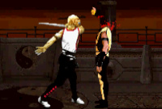 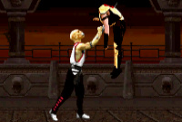 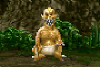 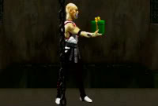
Fatality 1 - Blade Decap: B, B, B, B, HP (Close)
Fatality 2 - Blade Lift: B, F, D, F, LP (Close)
Babality: F, F, F, HK (Anywhere)
Friendship - Present: (Hold BL), U, F, F, HK (Anywhere)
Stage Fatality (Dead Pool): (Hold LP+LK), (D+HP) (Close)
Stage Fatality (Kombat Tomb/Pit II/The Pit): F, F, D, HK (Close)
 Jax
JaxBio:
His real name is Maj. Jackson Briggs, leader of a top U.S. Special Forces unit. After receiving a distress signal from Lt. Sonya Blade, Jax embarks on a rescue mission. One that leads him into a ghastly world where he believes that Sonya is still alive.
Special Moves:
Energy Wave: F, D, B, HK
Gotcha Grab: F, F, LP (Tap LP Rapidly, For Extra Hits)
Multi-Slam: (Tap HP Rapidly, While throwing your opponent)
Ground Pound: (Hold LK 3 sec.), (Release LK)
Backbreaker: BL (In Air, Close)
Finishers: 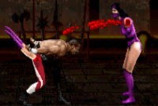 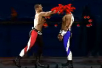 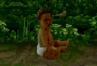
Fatality 1 - Arm Rip: BL, BL, BL, BL, LP (Sweep)
Fatality 2 - Head Smash: (Hold LP), F, F, F, (Release LP) (Close)
Babality: (Hold BL), D, U, D, U, LK (Anywhere)
Friendship - Paper Dolls: (Hold BL), D, D, U, U, LK (Anywhere)
Stage Fatality (Dead Pool): (Hold LP+LK), (D+HP) (Close)
Stage Fatality (Kombat Tomb/Pit II/The Pit): (Hold BL), U, U, D, LK (Close)
 Johnny Cage
Johnny CageBio:
After Shang Tsung's tournament, the martial arts superstar disappears. He follows Liu Kang into the Outworld. There he will compete in a twisted tournament which holds the balance of Earth's existence - as well as a script for another blockbuster movie.
Special Moves:
High Green Orb: F, D, B, HP
Low Green Orb: B, D, F, LP
Shadow Kick: B, F, LK
Split Punch: (LP+BL) (Close)
Shadow Uppercut: B, D, B, HP
Finishers: 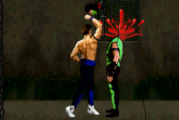 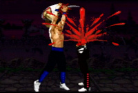 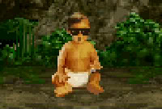
Fatality 1 - Decap Uppercut: F, F, D, U (Close)
+ (Hold D+LP+LK+BL for Triple Decap)
Fatality 2 - Torso Rip: D, D, F, F, LP (Close)
Babality: B, B, B, HK (Anywhere)
Friendship - Autograph: D, D, D, D, HK (Anywhere)
Stage Fatality (Dead Pool): (Hold LP+LK), (D+HP) (Close)
Stage Fatality (Kombat Tomb/Pit II/The Pit): D, D, D, HK (Close)
 Kitana
KitanaBio:
Her beauty hides her true role as personal assassin for Shao Kahn. Seen talking to an Earthrealm warrior, her motives have come under suspicion by her twin sister, Mileena. But only Kitana knows her own true intentions.
Special Moves:
Fan Swipe: (B+HP)
Fan Throw: F, F, (LP+HP) (Also in Air)
Fan Lift: B, B, B, HP
Square Wave Punch: F, D, B, HP
Finishers: 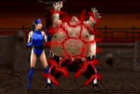 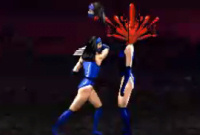 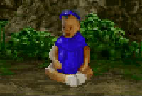 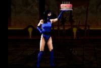
Fatality 1 - Kiss of Death: (Hold LK), F, F, D, F, (Release LK) (Close)
Fatality 2 - Fan Decap: BL, BL, BL, HK (Close)
Babality: D, D, D, LK (Anywhere)
Friendship - Cake: (Hold BL), D, D, D, (U+LK) (Anywhere)
Stage Fatality (Dead Pool): (Hold LP+LK), (D+HP) (Close)
Stage Fatality (Kombat Tomb/Pit II/The Pit): F, D, F, HK (Close)
 Kung Lao
Kung LaoBio:
A former Shaolin monk and member of the White Lotus Society, he is the last descendant of the Great Kung Lao who was defeated by Goro 500 years ago. Realizing the danger of the Outworld menace, he joins Liu Kang in entering Shao Kahn's contest.
Special Moves:
Hat Throw: B, F, LP (U/D to control)
Teleport: D, U (Quickly) (HP/HK after to attack)
Diving Kick: (D+HK) (In Air)
Whirlwind Spin: (Hold BL), U, U, (Release BL), LK (Tap LK Rapidly to keep spinning)
Finishers: 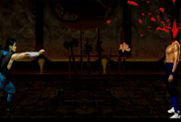 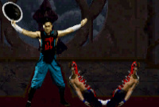 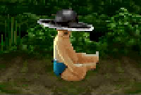 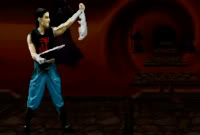
Fatality 1 - Hat Decap: (Hold LP), B, F, (Release LP) (D/U to Aim at neck) (Full Screen)
Fatality 2 - Body Slice: F, F, F, LK (Sweep)
+ Fatality 3 - Hat Splitter: (Hold LP), B, F, (Release LP) (D/U to Aim at
waist) (Full Screen)
Babality: B, B, F, F, HK (Anywhere)
Friendship - Magic Trick: B, B, B, D, HK (Anywhere)
Stage Fatality (Dead Pool): (Hold LP+LK), (D+HP) (Close)
Stage Fatality (Kombat Tomb/Pit II/The Pit): F, F, F, HP (Close)
 Liu Kang
Liu KangBio:
After winning the Shaolin Tournament from Shang Tsung's clutches, Liu Kang returns to his temples. He discovers his sacred home in ruins, his Shaolin brothers killed in a vicious battle with a horde of Outworld warriors. Now he travels into the dark realm
to seek revenge.
Special Moves:
High Fireball: F, F, HP (Also in Air)
Low Fireball: F, F, LP
Flying Kick: F, F, HK
Bicycle Kick: (Hold LK 4 sec.), (Release LK)
Finishers: 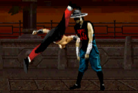 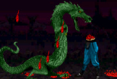 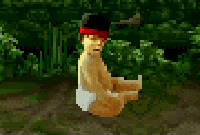 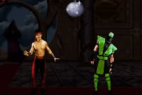
Fatality 1 - Butterfly Kick - Deadly Uppercut: (Hold BL), then make a 360° turn (F, U, B, D, F) (Sweep)
+ (Hold D+BL) for Decap / (Hold LP+LK) for Stage Fatality
Fatality 2 - Dragon's Bite: D, F, B, B, HK (Close)
Babality: D, D, F, B, LK (Anywhere)
Friendship - Disco Ball: F, B, B, B, LK (Anywhere)
Stage Fatality (Dead Pool): (Hold LP+LK), (D+HP) (Close)
Stage Fatality (Kombat Tomb/Pit II/The Pit): B, F, F, LK (Close)
 Mileena
MileenaBio:
Serving as an assassin along with her twin sister Kitana, Mileena's dazzling appearance conceals her hideous intentions. At Shao Kahn's request, she is asked to watch for her twin's suspected dissension. She must put a stop to it at any cost.
Special Moves:
Sai Throw: (Hold HP 2 sec.), (Release HP) (Also in Air)
Teleport Kick: F, F, LK
Ground Roll: B, B, D, HK
Finishers: 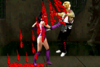 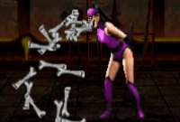 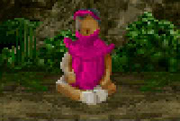 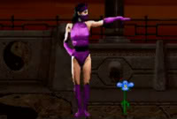
Fatality 1 - Sai Stabs: F, B, F, LP (Close)
Fatality 2 - Man-Eater: (Hold HK 3 sec.), (Release HK) (Close)
Babality: D, D, D, HK (Anywhere)
Friendship - Flower: (Hold BL), D, D, D, (U+HK) (Anywhere)
Stage Fatality (Dead Pool): (Hold LP+LK), (D+HP) (Close)
Stage Fatality (Kombat Tomb/Pit II/The Pit): F, D, F, LK (Close)
 Raiden
RaidenBio:
Watching events unfold from high above, the Thunder God realizes the grim intentions of Shao Kahn. After warning the remaining members of the Shaolin Tournament, Raiden soon disappears. He is believed to have ventured into the Outworld alone.
Special Moves:
Lightning Bolt: D, F, LP
Torpedo: B, B, F (Also in Air)
Teleport: D, U (Quickly)
Electric Grab: (Hold HP 3 sec.), (Release HP) (Close)
Finishers: 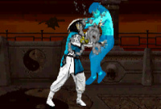 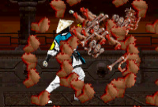 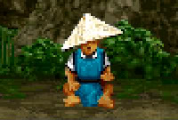 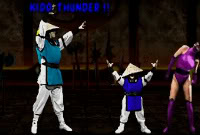
Fatality 1 - Electrocution: (Hold LK 3 sec.), (Release LK),
(Tap LK+BL Rapidly) (Close)
Fatality 2 - Explosive Uppercut: (Hold HP 10 sec.), (Release HP) (Close)
(Hold U+HP+HK) until heads drop
(Start charging before the words "Finish Him/Her" appears)
Babality: (Hold BL), D, D, (U+HK) (Anywhere)
Friendship - Kidd Thunder: D, B, F, HK (Anywhere)
Stage Fatality (Dead Pool): (Hold LP+LK), (D+HP) (Close)
Stage Fatality (Kombat Tomb/Pit II/The Pit): (Hold BL), U, U, U, HP (Close)
 Reptile
ReptileBio:
As Shang Tsung's personal protector, the elusive Reptile lurks in the shadows, stopping all those who would do his master harm. His human form is believed to disguise a horrid reptilian creature whose race was thought extinct millions of years ago.
Special Moves:
Acid Spit: F, F, HP
Forceball: B, B, (LP+HP)
Slide: (B+LP+LK+BL)
Invisibility: (Hold BL), U, U, (D+HP)
+ Fast Forceball: F, F, (LP+HP)
Finishers: 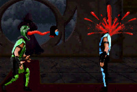 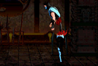 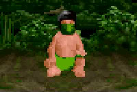 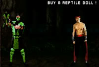
Fatality 1 - Yummy!: B, B, D, LP (Half Screen)
Fatality 2 - Invisible Slice: (While Invisible) F, F, D, HK (Close)
Babality: D, B, B, LK (Anywhere)
Friendship - Buy a Reptile Doll: B, B, D, LK (Anywhere)
Stage Fatality (Dead Pool): (Hold LP+LK), (D+HP) (Close)
Stage Fatality (Kombat Tomb/Pit II/The Pit): D, F, F, BL (Close)
 Scorpion
ScorpionBio:
The hell-spawned specter rises from the pits. After learning of Sub-Zero's return, he again stalks the ninja assassin - following him into the dark realm of the Outworld, where he continues his own unholy mission.
Special Moves:
Spear: B, B, LP
Teleport Punch: D, B, HP (Also in Air)
Air Throw: BL (In Air, Close)
Leg Takedown: F, D, B, LK
+ Forward Teleport Punch: D, F, HP (Also in Air)
Finishers: 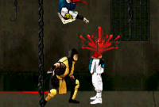 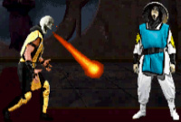 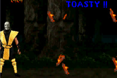 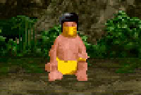 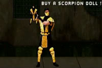
Fatality 1 - Spear Slice: (Hold HP), D, F, F, F, (Release HP) (Close)
Fatality 2 - Toasty!: (Hold BL), U, U, HP (Sweep)
Fatality 3 - Toasty!!: (Hold BL), D, D, U, U, HP (Anywhere)
Babality: D, B, B, HK (Anywhere)
Friendship - Buy a Scorpion Doll: B, B, D, HK (Anywhere)
Stage Fatality (Dead Pool): (Hold LP+LK), (D+HP) (Close)
Stage Fatality (Kombat Tomb/Pit II/The Pit): D, F, F, BL (Close)
 Shang Tsung
Shang TsungBio:
After losing control of the Shaolin Tournament, Tsung promises his ruler Shao Kahn to shape events that will lure the Earth warriors to compete in his own contest. Convinced of this plan, Shao Kahn restores Tsung's youth and allows him to live.
Special Moves:
Single Flaming Skull: B, B, HP
Double Flaming Skulls: B, B, F, HP
Triple Flaming Skulls: B, B, F, F, HP
Morphs:
Baraka: D, D, LK
Jax: D, F, B, HK
Johnny Cage: B, B, D, LP
Kitana: BL, BL, BL
Kung Lao: B, D, B, HK
Liu Kang: B, F, F, BL
Mileena: (Hold HP 2 sec.), (Release HP)
Raiden: D, B, F, LK
Reptile: (Hold BL), U, D, HP
Scorpion: (Hold BL), U, U
Sub-Zero: F, D, F, HP
+ Jade: F, B, F, LK
+ Noob: B, D, B, HP
+ Smoke: F, F, B, LP
(Jade, Noob, and Smoke must be unlocked for Shang to Morph into them.)
Finishers: 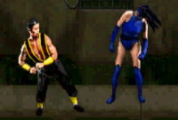 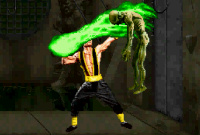 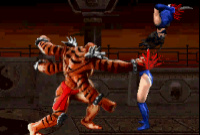 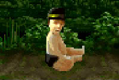
Fatality 1 - Inner-Ear Explosion: (Hold HK 2 sec.), (Release HK) (Sweep)
Fatality 2 - Soul Steal: (Hold BL), U, D, (U+LK) (Close)
Fatality 3 - Kintaro Morph: (Hold LP) 30 sec., (Release LP) (Sweep)
Babality: B, F, D, HK (Anywhere)
Friendship - Rainbow: B, B, D, F, HK (Anywhere)
Stage Fatality (Dead Pool): (Hold LP+LK), (D+HP) (Close)
Stage Fatality (Kombat Tomb/Pit II/The Pit): (Hold BL), D, D, U, (Release BL), D (Close)
 Sub-Zero
Sub-ZeroBio:
Thought to have been killed in the Shaolin Tournament, Sub-Zero mysteriously returns. It is believed that he traveled into the Outworld to again attempt to assassinate Shang Tsung. To do so, he must fight his way through Shao Kahn's tournament.
Special Moves:
Freeze: D, F, LP (+ Also in Air)
Slide: (B+LP+LK+BL)
Ground Freeze: D, B, LK
Finishers: 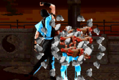 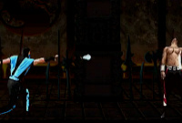 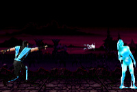 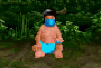 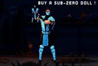
Fatality 1 - Ice Shatter:
Part 1 - Deep Freeze: F, F, D, HK (Sweep)
Part 2 - Finishing Uppercut: F, D, F, F, HP (Close)
Fatality 2 - Ice Grenade: (Hold LP), B, B, D, F, (Release LP) (Full Screen)
Fatality 3 - Grenade Shatter:
Part 1 - Deep Freeze: F, F, D, HK (Sweep)
Part 2 - Ice Grenade: (Hold LP), B, B, D, F (Full Screen)
Babality: D, B, B, HK (Anywhere)
Friendship - Buy a Sub-Zero Doll: B, B, D, HK (Anywhere)
Stage Fatality (Dead Pool): (Hold LP+LK), (D+HP) (Close)
Stage Fatality (Kombat Tomb/Pit II/The Pit): D, F, F, BL (Close)
 + Jade
+ JadeBio:
Jade, one of Shao Kahn's elite assassins, is ordered to spy on Kitana during the tournament. Raised in Outworld after being given as tribute, she carries out her duties in the shadows, though her growing bond with Kitana complicates her loyalty to the
emperor.
Special Moves:
Fan Throw: F, F, (LP+HP) (Also in Air)
(Jade is invulnerable to most projectiles)
Finishers: 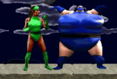
Fatality 1 - Kiss of Death: (Hold LK), F, F, D, F, (Release LK) (Close)
Fatality 2 - Fan Decap: BL, BL, BL, HK (Close)
Babality: D, D, D, LK (Anywhere)
Friendship - Cake: (Hold BL), D, D, D, (U+LK) (Anywhere)
Stage Fatality (Dead Pool): (Hold LP+LK), (D+HP) (Close)
Stage Fatality (Kombat Tomb/Pit II/The Pit): F, D, F, HK (Close)
Jade's Clues:
"A princess is the Key"
"I am one of four!"
Fight Jade:
Fight your way up the tournament until you reach the fighter just under the question mark.
Defeat the opponent only using LK.
You will go to Goro's Lair to fight Jade.
Unlock Jade:
* Set computer difficulty to very hard (best to get AI exploits to work from first matches).
* Improved AI is off.
* Beat the game without losing, including beating Jade. Losing a round is ok.
* To select Jade on the original character selection screen, (Hold START) and then select Kitana with another button.
* Note: you can unlock both Jade and Noob in one game if you can meet both conditions.
 + Noob Saibot
+ Noob SaibotBio:
Noob Saibot, a shadowy enigma, emerges only to challenge the strongest warriors. Likely a revenant, he serves Shao Kahn, though his true motives remain hidden. Loyal to Quan Chi, Noob is biding his time, with darker objectives brewing in the shadows.
Special Moves:
Spear: B, B, LP
Slide: (B+LP+LK+BL)
Teleport: D, U
Leg Takedown: F, D, B, LK
Finishers:
Fatality 1 - Explosive Uppercut: F, F, D, D HP (Close)
(Hold U+HP+HK) until heads drop
Fatality 2 - Slice: (Hold HP), D, F, F, F, (Release HP) (Close)
Babality: D, B, B, HK (Anywhere)
Friendship - Buy a Noob Saibot Doll: B, B, D, HK (Anywhere)
Stage Fatality (Dead Pool): (Hold LP+LK), (D+HP) (Close)
Stage Fatality (Kombat Tomb/Pit II/The Pit): D, F, F, BL (Close)
Noob Saibot's Clues:
"Holding START is the Key"
"I am one of four!"
"If I can't beat you, I shall join you"
"It's cold in the shadows"
"Thanks to Abystus, I am free"
"Ytfif Ot Teg" (Fifty to Get)
"Zpaul2fresh8 was here"
Fight Noob Saibot:
Get 50 wins in a row to travel to Goro's Lair and fight against Noob Saibot.
Unlock Noob Saibot:
* Set computer difficulty to very hard (best to get AI exploits to work from first matches).
* Improved AI is off.
* Beat the game in under 12m 50sec.
* To select Noob Saibot on the original character selection screen, (Hold START) and then select Sub-Zero with another button.
 + Smoke
+ SmokeBio:
Tomas Vrbada was recruited by the Lin Kuei for his ability to escape capture and transform into smoke. With no memory of his past, he considers Sub-Zero a brother. Dishonored by Sub-Zero's failure, Smoke is sent to kill both Sub-Zero and Shang Tsung if
the mission fails.
Special Moves:
Spear: B, B, LP
Teleport Punch: D, B, HP (Also in Air)
Air Throw: BL (In Air, Close)
Dash Throw: F, D, B, LK
Finishers:
Fatality 1 - Smoke Death: B, D, B, B, HP (Anywhere)
Fatality 2 - Telekinetic Decap Uppercut: F, B, B, F, HP (Anywhere)
Babality: D, B, B, HK (Anywhere)
Friendship - Buy a Smoke Doll: B, B, D, HK (Anywhere)
Stage Fatality (Dead Pool): (Hold LP+LK), (D+HP) (Close)
Stage Fatality (Kombat Tomb/Pit II/The Pit): D, F, F, BL (Close)
Smoke's Clues:
"He is the Original"
"I am one of four!"
Fight Smoke:
Play in a 1 or 2 player mode until you reach the Portal.
When you do, uppercut your opponent until you see Dan Forden and hear "Toasty."
Quickly press ( +START) while he is on the screen to go to Goro's Lair and fight Smoke.
+START) while he is on the screen to go to Goro's Lair and fight Smoke.
Unlock Smoke:
* Set the computer difficulty to very easy.
* Defeat the CPU with a double Flawless Victory and a Fatality on The Pit II stage when silhouettes fly over the moon. You will then face Hornbuckle. Try using Jade for the best chance.
* Defeat Hornbuckle to unlock Smoke.
* To select Smoke on the original character selection screen, (Hold START) and then select Reptile with another button.
* Note: I understand there is only a 1% chance to see the silhouettes over the moon. The best way to get the silhouettes, is to start a single-player game and die until you are on the pit stage. If there are no silhouettes, press start on player 2, let
the timer run out without any player damaging the other, start a new game, and you will be on the pit again. Rinse and repeat.
+ Hornbuckle (Hidden)
Bio:
Hornbuckle, a holy man loyal to Onaga, wielded ancient incantations to overpower Blaze, the elemental guardian. With cunning and skill, he bound Blaze to protect the Great Dragon egg. As the kombatants gathered for Kahn's tournament, Hornbuckle awaited
the moment Onaga's legacy would rise again.
Special Moves:
High Fireball: F, F, HP (Also in Air)
Low Fireball: F, F, LP
Flying Kick: F, F, HK
Bicycle Kick: (Hold LK 4 sec.), (Release LK)
Finishers:
Fatality 1 - Butterfly Kick - Deadly Uppercut: (Hold BL), then make a 360° turn (F, U, B, D, F) (Sweep)
Fatality 2 - Dragon's Bite: D, F, B, B, HK (Close)
Babality: D, D, F, B, LK (Anywhere)
Friendship - Disco Ball: F, B, B, B, LK (Anywhere)
Stage Fatality (Dead Pool): (Hold LP+LK), (D+HP) (Close)
Stage Fatality (Kombat Tomb/Pit II/The Pit): B, F, F, LK (Close)
Fight Hornbuckle:
* Defeat the CPU with a double Flawless Victory and a Fatality on The Pit II stage when silhouettes fly over the moon. You will then face Hornbuckle.
 + Kintaro (Sub-Boss/Unlockable)
+ Kintaro (Sub-Boss/Unlockable)Bio:
Kintaro, a fierce Shokan warrior of the Tigrar lineage, steps up as Shao Kahn's supreme commander after Goro's defeat. Stronger and more agile than his predecessor, he vows revenge on Liu Kang and the Earth warriors, determined to prove the Shokan are
the mightiest in Outworld.
Special Moves:
Fireball: B, D, F, LP
Teleport Stomp: D, D, U
Finishers:
Fatality 1 - Oblivion Stomp: D, D, D, D, HK (Sweep)
Fatality 2 - Torso Punch: D, D, B, B, HP (Close)
Babality: (Hold BL), U, D, D, LK (Anywhere)
Friendship: N/A
Stage Fatality: N/A
Unlock Kintaro:
* You need to enable improved AI in the service menu.
* Smoke, Jade, and Noob must already be unlocked.
* Then beat survival with at least 600 points. Must do it twice to unlock both bosses.
Play as Kintaro:
* Make sure vs cheats are enabled in the service menu.
* Hold (U+LP+HP+LK+HK) before the match starts. Works only in Kahn's Arena.
 + Shao Kahn (Boss/Unlockable)
+ Shao Kahn (Boss/Unlockable)Bio:
Shao Kahn, the ruthless Supreme Ruler of Outworld, seeks power through conquest. He banished Shang Tsung to Earthrealm to unbalance the dimensional gates for invasion. Obsessed with domination, Kahn will stop at nothing to conquer all realms and merge
them with Outworld.
Special Moves:
Spear Toss: B, D, F, LP
Grab & Punch: (Hold HP 3 sec.), (Release HP) (Close)
Shoulder Charge: B, F, F, HP
Upward Shoulder: B, D, B, HK
Finishers:
Fatality 1 - Matter over Mind: D, D, D, F, HP (Close)
Fatality 2: N/A
Babality: D, B, F, HK (Anywhere)
Friendship: N/A
Stage Fatality: N/A
Unlock Shao Kahn:
* You need to enable improved AI in the service menu.
* Smoke, Jade, and Noob must already be unlocked.
* Then beat survival with at least 600 points. Must do it twice to unlock both bosses.
Play as Shao Kahn:
* Make sure vs cheats are enabled in the service menu.
* Hold (D+LP+HP+LK+HK) before the match starts. Works only in Kahn's Arena.
Kombat Kodes:
Hold the following buttons down during the "Battle Screen" before each match begins to activate Kombat Kodes.
2 Player Game:
Faster Uppercuts - P1: HP | P2: HP
Super Uppercuts - P1: (U+HP) | P2: (U+HP)
Blocking Disabled - P1: BL | P2: BL
Throwing Disabled - P1: LP | P2: LP
Outworld Weather - P1: (HP+HK) | P2: (HP+HK)
Going Back in Time (Pong) - P1: (LP+LK+BL) | P2: (LP+LK+BL)
La Luna Mode - P1: U | P2: U
Dude Where's My Bar - P1: D | P2: D
Round Timer Disabled - P1: (D+HK)
Display Hit Boxes - P1: F | P2: F
Tug of War Kombat - P1: (B+BL) | P2: (B+BL)
Randper Kombat - P1: (F+LK) | P2: (B+LK)
Explosive Kombat - P1: (LP+HP) | P2: (LK+HK)
Kombat Kodes work in Klassic Kombat as well
2 vs 2 Mode:
Finishing Tags Allowed - P1: (LP+HP+BL) | P2: (LP+HP+BL)
Bonus:
During ending before cast of character:
P1: (Hold D) | P2: (Hold D) - Dizzy Disco Ball
P1: (Hold U) | P2: (Hold U) - Babalities
Return to Top
Special Thanks:
Karl Lindsey:
Additional information on MKII+ Fatalities